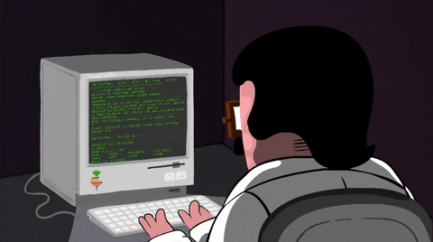

I have long held a deep passion for computer science, a romantic field that constructs interpretable and reliable intelligence through mathematics, logic, and algorithms. I am captivated by rigorous logical reasoning within epistemic knowledge graphs, as well as the whole-process automation of academic research brought by scientific LLM agents.
My long-term research plan centers on trustworthy large language models, epistemic knowledge modeling, and low-hallucination scientific agents, while taking 3D generative reconstruction as a cross-modal auxiliary branch to support multi-scenario knowledge application.
I sincerely look forward to connecting with like-minded peers who are passionate about academic exploration. Whether your research focuses on NLP, knowledge graphs, multi-modal foundation models, or 3D vision, I am always ready for in-depth academic communication and collaborative exploration.
Just as Lyra, the Lyra constellation, chases the starlight, I keep pursuing reliable and interpretable AI research.
